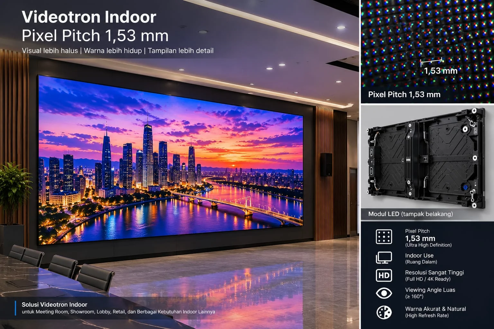

Indoor P1.53Videotron Indoor

Indoor P1.53
Spesifikasi Utama
- Jenis
- Indoor Fine Pitch
- Pixel Pitch
- 1.53mm
- Kabinet
- 640 × 480 mm
- Kecerahan
- 600 nits
- Refresh Rate
- 3.840 Hz
- Sudut Pandang
- 160° / 160°
- Konsumsi Daya
- ≤ 650 W/m² (maks) · 220 W/m² (rata-rata)
- Perlindungan
- IP30
- Usia Pakai
- 100.000 jam
- Jarak Pandang Ideal
- ≥ 1,8 m
- Suhu Operasi
- -10°C s/d 40°C
Spesifikasi dapat berubah sewaktu-waktu. Hubungi sales untuk data resmi.
Produk Lainnya

Punya Proyek di Pikiran?
Mari wujudkan layar yang menarik perhatian.
Hubungi Tim Kami- Konsultasi kebutuhan
- Rekomendasi sesuai ruangan
- Instalasi & purna jual